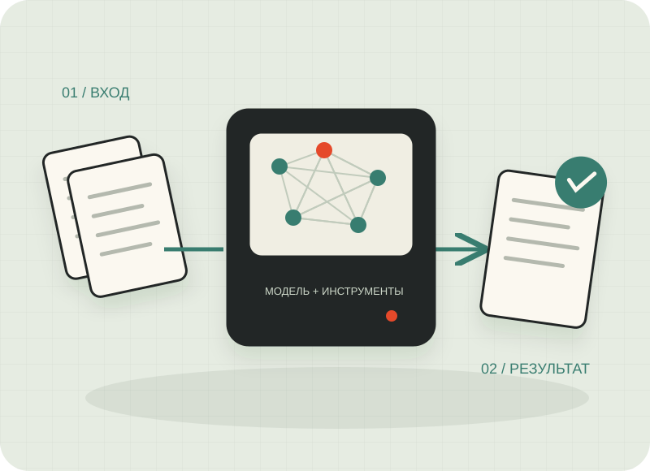
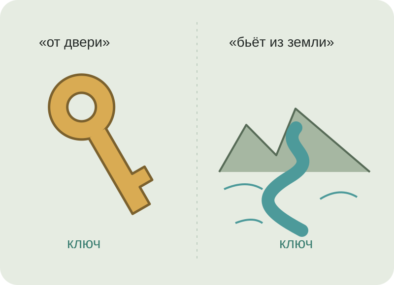
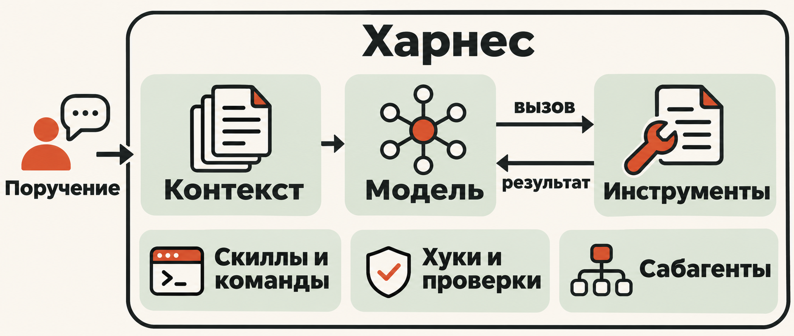

Выучить закономерности
Много данных→● ─ ●
╲ ╳ ╱
● ─ ●
╲ ╳ ╱
● ─ ●
Предобучение (pretraining) — обучение общим закономерностям на большом массиве данных.
Веса — числа внутри модели, которые меняются при обучении.
ОТ ВОПРОСА К РЕЗУЛЬТАТУ
Поручить работу.
Увидеть действия.
Проверить результат.

 Claude Code
Claude Code Codex
Codex Cursor
Cursor pi
piLLM (большая языковая модель) — модель, обученная работать с языком: продолжать текст и выполнять текстовые задачи.
Фундаментальная модель обучена на широком наборе данных и служит основой для разных задач.
Мультимодальная модель работает с несколькими видами данных: например, текстом, изображениями и звуком.
Агент — программа, которая использует модель и инструменты для выполнения задачи.
Предобучение (pretraining) — обучение общим закономерностям на большом массиве данных.
Веса — числа внутри модели, которые меняются при обучении.
Post-training — настройка модели для выполнения инструкций и целевых задач.
Fine-tuning — дообучение на выбранных данных: например, заданиях и желаемых ответах.
Alignment — согласование поведения модели с целями, ценностями и требованиями людей.
Inference — обработка запроса и построение ответа с помощью обученной модели.
Обычный inference использует уже обученные веса. Для изменения весов требуется обучение.
Токен — единица разбиения текста: часть слова, слово, знак или байтовый фрагмент.
Модель обрабатывает текст в виде токенов. Сначала текст нужно разбить на эти единицы.
Но длинные слова превращаются в длинные последовательности.
Один фрагмент содержит больше букв. Части можно соединять в новые слова.
Редкие формы и придуманные слова трудно перечислить заранее.
Схема разбиения на фрагменты. Токены могут пересекать границы корней и суффиксов.
Эмбеддинг — выученное числовое представление: вектор, с которым модель выполняет вычисления.
Вектор — упорядоченный набор чисел.
Модель учит свои начальные эмбеддинги. При дальнейшей обработке представления меняются с учётом контекста.
Схема числового представления текста.
«Дверь заперта. Где мой ключ?»
«У подножия скалы бьёт ключ».
Контекст — доступные модели сообщения, инструкции и материалы.
Контекстное окно — предел числа токенов, которые модель может учитывать при одном обращении.
Attention (внимание) взвешивает влияние доступных токенов при расчёте представления текущего токена.

При обработке запроса меняются представления токенов. Обученные веса остаются прежними.
Выбранный токен добавляется в контекст и влияет на следующий шаг.
Чтобы проверить результат,
Чтобы проверить результат, откройте файл отчёта, сравните каждое значение с исходным документом и отдельно отметьте условия, для которых не найдено подтверждение.
·данных — 42%
·отч — 35%
·проекта — 15%
Остальные — 8%
После каждого выбора контекст дополняется, а вероятности следующих токенов пересчитываются.
Схема генерации. · обозначает пробел. Выбор токена не всегда совпадает с максимальной вероятностью.
Промпт — текст запроса к модели: задача и необходимые условия.
Что сделать, зачем
и какой результат нужен.
Роль и рабочая среда. Для кого результат и что адресат уже знает.
Структура, объём, язык
и место сохранения.
При необходимости: образец результата и важные исключения.
Файлы, ссылки, версии.
Где искать дополнительные сведения.
Границы действий, критерии готовности. Что уточнить, если данных мало.
Чем яснее задача и условия, тем выше шанс получить полезный ответ.
Если задача непонятна, сначала задай уточняющие вопросы. Не подменяй факты догадками.
Посмотри документацию
и сделай таблицу.
Извлеки требования к питанию оборудования для проверки проекта. Ты — инженерный ассистент: извлекай требования из технической документации, сохраняй единицы и условия. Результат нужен инженеру, который знает схему, но не читал руководство. Основной источник — manual.md. Пояснения ищи в notes.md. Сохрани requirements.md: таблица «Параметр | Значение | Единица | Пункт». Образец строки: «Напряжение | … | В | §…». Исходники не меняй. Сверь строки с документом. Отсутствующее пометь «не найдено». Если задача или условия непонятны, сначала задай уточняющие вопросы.
Промпт-инжиниринг — формулирование задачи, условий, примеров и желаемого результата.
Контекст-инжиниринг — отбор и обновление инструкций, документов, истории и памяти для текущего шага.
Харнес-инжиниринг — проектирование среды агента: контекста, инструментов, цикла и проверок.
Уже настроены работать с обычными запросами; некоторые клиенты помогают уточнить промпт.
Может добавлять сведения о пользователе в контекст нового обращения. Веса модели от этого не меняются.
Специальные приёмы нужны реже. Ясную постановку задачи и проверку результата теперь закрепляют в скиллах.
Память и её доступность зависят от клиента и настроек.
Небольшая рабочая задача.
Если своей нет: сравнить две версии инструкции для коллеги.
Задача и роль, адресат, источники, формат и пример. Ограничения, проверка и уточняющие вопросы.
Понятно, что сделать?
Где взять данные?
Как принять результат?
Что нужно уточнить?
Отправьте один промпт в чат без рабочих данных. Вместе уточним один пример.
Модель — выбирает следующий шаг: ответить или запросить инструмент.
Харнес — программа вокруг модели. Хранит контекст, ведёт цикл и управляет выполнением.
Инструмент — операция с определёнными входом и результатом: прочитать файл, запустить команду.

while True:
response = model(messages, tools)
messages.append(response)
if not response.tool_calls:
break
for call in response.tool_calls:
result = execute(call)
messages.append(tool_result(call.id, result))Выбирает вызов
или готовит ответ
Ведёт историю,
вызывает инструмент
Получает аргументы,
возвращает результат
Псевдокод цикла · learn-claude-code · s01.
Function calling — запрос модели на вызов инструмента с аргументами.
{"name": "read_file",
"arguments": {
"path": "inputs/faq.md"
}}Tool use — работа с инструментами: запрос модели, выполнение средой и возврат результата.
text = read_file(
"inputs/faq.md"
)Structured output — вывод по заданной схеме: поля, типы и обязательные значения.
{"days": 45,
"unit": "calendar_days",
"source": "inputs/faq.md"}Харнес предоставляет конкретные функции. Хороший тон: каждой задаче — свой инструмент с понятными входом и результатом.
find_quote(query, documents)Модель пишет скрипты, а харнес запускает их через командную оболочку — в пределах доступных программ и прав.
python extract_quotes.py inputs/| Операция | Claude Code |
|---|---|
| Список и поиск файлов | Glob |
| Чтение | Read |
| Запись и правка | Write · Edit |
| Поиск по содержимому | Grep |
| Командная оболочка | Bash |
Хук — обработчик, который харнес запускает при заданном событии.
| Событие Claude Code | Когда срабатывает | Зачем подключить |
|---|---|---|
SessionStart | Начало или возобновление сессии | Загрузить актуальное состояние задачи |
PreToolUse | Перед выполнением инструмента | Проверить аргументы, запретить запись в исходники |
PostToolUse | После успешного выполнения инструмента | После правки запустить форматирование или проверку |
Stop | Агент собирается закончить ответ | Проверить результат и вернуть замечание, если он неполон |
Сабагент — отдельный агент для подзадачи со своим контекстом, инструкциями и инструментами.
Основной агент получает краткий итог вместо всех документов и логов.
Сабагенту передают только контекст его подзадачи.
Один ищет цитаты, другой сверяет числа, третий проверяет условия.
Основной агент собирает результаты.
Отдельные инструкции, критерии ответа и доступные инструменты.
Например: «Проверь только точность цитат. Верни расхождения и источники».
Скилл — инструкция и материалы для повторяемого способа работы агента.
Скрипт — программа в файле для выполнения конкретной операции.
Агент читает скилл, выбирает действия и вызывает доступные инструменты.
study/ ├── SKILL.md ├── scripts/ # optional └── references/ # optional
SKILL.md — как проверить знания.
Скрипт — например, извлечь текст PDF.
В нашем study достаточно инструкции, учебного текста и файловых инструментов.
Скилл задаёт вопросы по прочитанному, разбирает ответы по источнику и сохраняет отчёт. Проверьте себя по материалу этой лекции.
/study exercises/01-study/materials/lecture-01.md
Модель и контекст.
Устройство агента.
Инструменты и скиллы.
Сначала ваш ответ.
Затем разбор
с опорой на текст.
Что поняли.
Где есть пробел.
Что перечитать.
Выбираю папку. Вижу одинаковые файлы и сколько места занимают лишние копии.
Файлы и подпапки.
Документы и копии.
Разные имена.
Сравнить содержимое.
Собрать группы.
Показать пути.
Открыть приложение.
Посчитать лишние копии.
Проверить находки.
Поручаем агенту создать приложение, запустить его и проверить результат.
Предскажите результат, затем проверим приложение на файлах.
Содержимое одинаковое.
Ожидаем одну группу
со всеми копиями.
Содержимое разное.
Такие файлы
не должны стать дублями.
Запускаем поиск снова.
Группа увеличилась.
Итог пересчитан.
Лишние копии: оставляем по одному файлу в группе, считаем размер остальных.
От обсуждения задачи до работающего приложения — через четыре скилла.
Уточняю, что нужно и зачем.
Результат: требования и технические факты.
Собираю требования в PRD.
Результат: описание того, что строим.
Проверяю декомпозицию по PRD.
Результат: задачи в Beads после ревью.
Реализую задачи с тестами.
Результат: работающий инструмент.
Покажу этот путь на своём решении задачи поиска дубликатов.
5 ноября встретимся, чтобы разобрать ваши попытки. Какую задачу вы хотите взять из своей работы?
Что сейчас отнимает время
или вызывает затруднения?
С какого шага начнёте?
Что дадите ему для работы?
Что сможете проверить сами?
Что захотите разобрать вместе?
Что пока мешает сделать первую попытку?